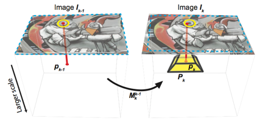

Projects

SURFTrac
This is the result of my 3-month internship at Nokia Research Center, Palo Alto. We present a light-weight tracking method for outdoor augmented reality using pure computer vision technique with a database of geotagged and labeled images.
After extracting and matching SURF features of the first video frame with the database, our method reliably tracks those features locally in the subsequent frames. This method is fast enough to be implemented on mobile devices. The technique is demonstrated in the context of augmenting a video stream with labels of buildings visible in the video.
This project was demonstrated on N95 in ISMAR’08 and CVPR’09. Also, see an application of SURFTrac for 3D tracking and camera pose estimation here.
Paper:
D.N. Ta, W.C. Chen, N. Gelfand, and K. Pulli, “SURFTrac: Efficient tracking and continuous object recognition using local feature descriptors,” Proceedings of the IEEE Conference on Computer Vision and Pattern Recognition (CVPR), 2009. (pdf)
Saturday, December 6, 2008
